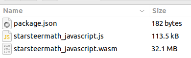
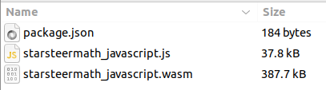

Your network connection is slow. Выявляем проблемы с сетью у пользователя
Павел Дадыкин, ROGII
Your network connection is slow.
Павел Дадыкин
Обо мне
Павел Дадыкин
📍 Живу в Ульяновске
💻 10 лет во фронтенде
👨💼 3 года тимлид на проекте StarLite Web
Разработка продуктов для нефтегазовой индустрии
Geoscience-решения
Много математических расчётов
Desktop, Web, iOS, Android, SDK, Public API
О чём доклад
Зачем пользователям знать о проблемах с соединением
Как наш сервис должен реагировать
Какие браузерные API работают, а какие нет
Зачем пользователям знать о проблемах с их соединением
🤷♂️ Пользователь не всегда понимает, что происходит
⏳ Он может ждать live-данные, а они не придут
👁️🗨️ Визуальное уведомление повышает доверие к продукту
Типы проблем
🚫 Полное отключение от интернета
📉 Временные скачки скорости
🐢 Постоянно низкая пропускная способность
Браузер должен уметь всё это определять
Online/Offline
window.navigator.onLine
if (navigator.onLine) {
console.log("online");
} else {
console.log("offline");
}
Online/Offline
window.addEventListener('online', () => {/* сеть есть */});
window.addEventListener('offline', () => {/* сети нет */});
navigator.onLine
Показывает только есть ли подключение к сети
Не делает пинг, запрос или проверку доступностиНет информации о скорости или стабильности
navigator.onLine === true
😀 С соединением всё в порядке
🙁 DNS не работает
🙁 Wi-Fi есть, но интернет «упал»
🙁 Wi-Fi требует авторизации
🙁 Проблемы с VPN
Что же показывает navigator.onLine?
false → Проблемы с сетью точно есть 🙁
true → Возможно , с сетью всё в порядке 🤨
Не стоит полагаться только на этот способ!
Как же определить скорость соединения?
Браузерное API для получения информации о типе подключения и скорости
window.navigator.connection
Свойства navigator.connection
Свойство
Описание
effectiveTypeТип соединения: 'slow-2g', '2g', '3g', '4g'
typeТип сети: 'wifi', 'cellular', 'bluetooth', 'ethernet', ...
downlinkОценка скорости в Mbps
downlinkMaxМаксимально возможная скорость
rttRound-trip time (RTT) в миллисекундах
saveDataВключён ли режим экономии трафика
API для анализа времени загрузки ресурсов на странице
performance.getEntriesByType('resource')Позволяет отслеживать фактическую производительность на клиенте
Работает с: img, script, fetch, link, xhr и др.
Очень гибкий инструмент
Resource Timing API
Пример Performance Resource Timing
Типичные метрики Resource Timing
Метрика
Формула
Назначение
TCP Handshake
connectEnd - connectStartВремя установления TCP-соединения
DNS Lookup
domainLookupEnd - domainLookupStartВремя разрешения DNS-имени
Redirect Time
redirectEnd - redirectStartЗадержка из-за переадресации
Request Time
responseStart - requestStartВремя между отправкой запроса и первым байтом ответа
TLS Negotiation
requestStart - secureConnectionStartВремя на установление HTTPS-соединения
Fetch Time
responseEnd - fetchStartОбщее время загрузки (без редиректов)
Типичные метрики Resource Timing
Метрика
Формула
Назначение
Service Worker
fetchStart - workerStartЗадержка на обработку запроса в Service Worker
Контент сжат?
decodedBodySize ≠ encodedBodySizeПроверка наличия сжатия (например, gzip)
Использован кэш?
transferSize === 0Загрузка из локального кэша
Современный протокол?
nextHopProtocolОжидается: h2 или h3 (HTTP/2/3)
Блокирует отрисовку?
renderBlockingStatusУказывает, задерживает ли ресурс first paint
Timing в Developer Tools
Сценарии использования
🔍 Анализ реальной производительности на клиенте
🚦 Выявление узких мест в производительности
🧰 Улучшение логики загрузки и отложенной инициализации
🧬 Профилирование динамически загружаемых ресурсов
📊 Сбор пользовательских метрик
Можно записывать в аналитику:
Время загрузки изображений, скриптов, иконок, шрифтов
Как влияет скорость соединения на время отображения UI
Географию/сети пользователей с медленными загрузками
Определяем медленное соединение
Следим за fetch запросами
Смотрим время загрузки (duration)
Смотрим объём (transferSize)
Вычисляем скорость (transferSize / duration)
Если скорость ниже какого-то порога - сигнализируем
Получение информации о запросах
const observer = new PerformanceObserver((list) => {
for (const entry of list.getEntries()) {
console.log(`${entry.name}, ${entry.startTime}`);
}
});
observer.observe({ type: 'resource' });
Вычисление скорости ресурса
const entries = list.getEntries();
const lastEntry = entries[entries.length - 1];
if (lastEntry.initiatorType === 'fetch') {
const size = lastEntry.transferSize;
const duration = lastEntry.duration;
const speed = size / duration;
const isConnectionFast = speed > SLOW_CONNECTION_SPEED;
}
Варианты реагирования
🔔 Показываем уведомление
🚫 Блокируем интерактивные действия, которые могут привести к ошибке
🪶 Подгружаем облегчённую версию контента
🔁 Начинаем повторную отправку запросов
Выводы
Пользователи должны знать о проблемах с сетью
navigator.onLine работает только в крайних случаяхNetwork Information API не работает
Используйте Resource Timing API
Не забывайте о CORS
Разные сборки (через cmake)
Debug
Большой вес файла
Работает медленнее
Детальное описание ошибок

Release
Маленький вес файла
Работает быстро
Сложно отлаживать

CSP Error
Refused to compile or instantiate WebAssembly module because 'unsafe-eval' is not an allowed source of script in the following Content Security Policy directive: "script-src https:".
Content-Security-Policy: script-src 'wasm-unsafe-eval'
Пожалуйста, оставьте свой отзыв
Павел Дадыкин
https://meloman4eg.github.io/network-issues-fc-2025/
@meloman4eg